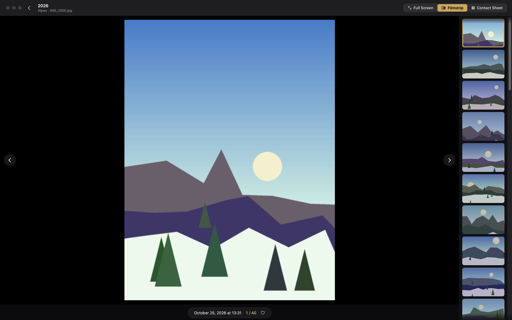
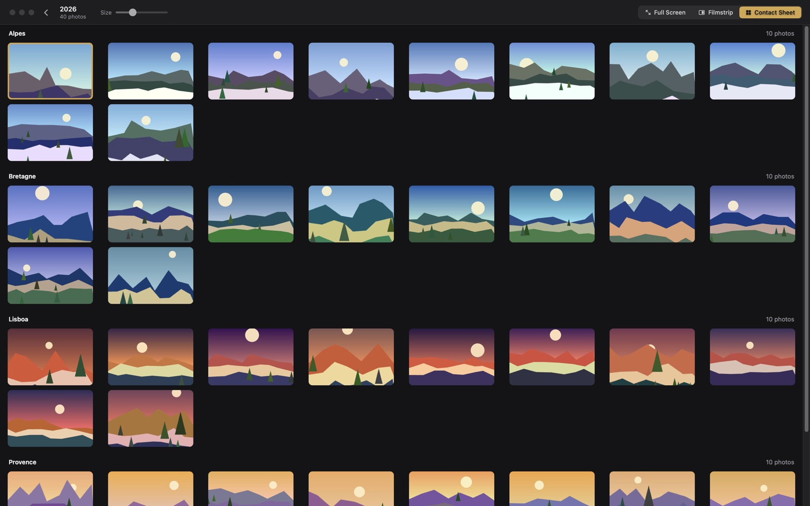
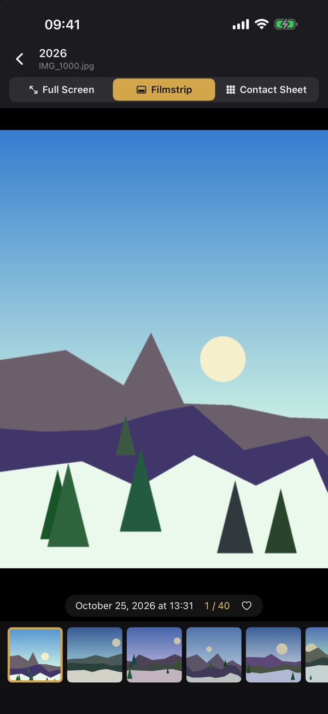

Diapo
Your photos, big
Diapo shows the photos of a folder or a whole disk big on screen, subfolders included. You go from one photo to the next with the arrow keys, and your photos are never modified.



14-day free trial (15 days on Windows), then a one-time purchase to keep using it. No subscription. No ads, no tracking, no account.
Available in 28 languages.